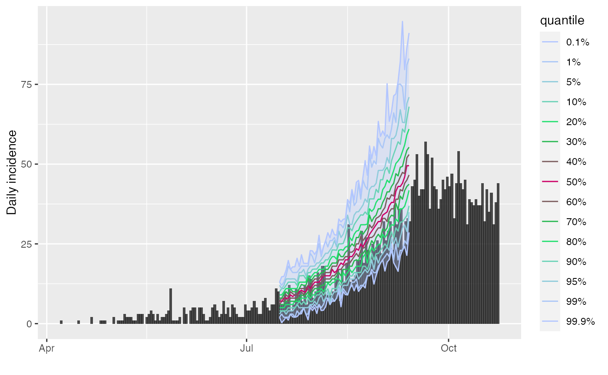

The plot method of projections objects (output by the function
project) shows quantiles of predicted incidence over time. The
function add_projections can be used to add a similar plot to an
existing incidence plot. This latter function is piping friendly (see
examples).
# S3 method for projections plot(x, ylab = NULL, title = NULL, ...) add_projections( p, x, quantiles = c(0.01, 0.05, 0.1, 0.5), ribbon = TRUE, boxplots = FALSE, palette = quantile_pal, quantiles_alpha = 1, linetype = 1, linesize = 0.5, ribbon_quantiles = NULL, ribbon_color = NULL, ribbon_alpha = 0.3, boxplots_color = "#47476b", boxplots_fill = "grey", boxplots_alpha = 0.8, outliers = TRUE )
| x | A |
|---|---|
| ylab | An optional label for the y-axis. If missing will default to "predicted incidence" or, if cumulative, "predicted cumulative incidence" |
| title | An optional title. |
| ... | Further arguments to be passed to |
| p | A previous incidence plot to which projections should be added. |
| quantiles | A vector of quantiles to plot, automatically completed to be symmetric around the median. |
| ribbon | A logical indicating if a ribbon should be drawn; defaults to
|
| boxplots | A logical indicating if boxplots should be drawn. |
| palette | A color palette to be used for plotting the quantile lines;
defaults to |
| quantiles_alpha | A number used to control the transparency of the quantile lines, from 0 (full transparency) to 1 (full opacity); defaults to 1. |
| linetype | An integer indicating the type of line used for plotting the quantiles; defaults to 1 for a plain line. |
| linesize | An integer indicating the size of line used for plotting the quantiles; defaults to 0.5. |
| ribbon_quantiles | A vector of 2 quantiles to be used to determine the limits of the ribbon; if NULL (default); uses the most extreme quantiles if available; if quantiles are not provided, the daily range will be used. |
| ribbon_color | Any valid color, used for the ribbon. |
| ribbon_alpha | A number used to control the transparency of the ribbon, from 0 (full transparency) to 1 (full opacity); defaults to 0.3. |
| boxplots_color | Any valid color, used for the boxplot. |
| boxplots_fill | Any valid color, used for filling the boxplot. |
| boxplots_alpha | A number used to control the transparency of the boxplots, from 0 (full transparency) to 1 (full opacity); defaults to 0.8. |
| outliers | A logical indicating if outliers should be displayed
alongside the boxplots; defaults to |
project to generate projections
Thibaut Jombart thibautjombart@gmail.com
if (require(outbreaks) && require(distcrete) && require(incidence) && require(magrittr)) { si <- distcrete("gamma", interval = 1L, shape = 2.4, scale = 4.7, w = 0.5) i <- incidence(ebola_sim$linelist$date_of_onset) plot(i) ## add projections after the first 100 days, over 60 days set.seed(1) proj <- project(x = i[1:100], R = 1.4, si = si, n_days = 60) ## plotting projections: different options plot(proj) plot(proj, quantiles = c(.025, .5)) # 95% CI plot(proj, ribbon_color = "red", quantiles = FALSE) # range plot(proj, ribbon_color = "red", quantiles = FALSE, ribbon_quantiles = c(.025, .5)) plot(proj, boxplots = TRUE, quantiles = FALSE, ribbon = FALSE) plot(proj, boxplots = TRUE, quantiles = FALSE, outliers = FALSE) plot(proj, linetype = 3) ## adding them to incidence plot plot(i) %>% add_projections(proj) plot(i[1:160]) %>% add_projections(proj) plot(i[1:160]) %>% add_projections(proj, boxplots = FALSE) plot(i[1:160]) %>% add_projections(proj, boxplots_alpha = .3, boxplots_color = "red") ## same, with customised quantiles and colors quantiles <- c(.001, .01, 0.05, .1, .2, .3, .4, .5) pal <- colorRampPalette(c("#b3c6ff", "#00e64d", "#cc0066")) plot(i[1:200]) %>% add_projections(proj, quantiles, palette = pal) }#>#>#> #>#> #>#> #>#> #>#> #>